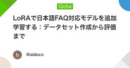
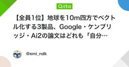

機械学習タグが付けられた新着記事 - Qiita
https://qiita.com/tags/機械学習
機械学習に関する情報が集まっています。現在16326件の記事があります。また9433人のユーザーが機械学習タグをフォローしています。
フィード

LoRAで日本語FAQ対応モデルを追加学習する：データセット作成から評価まで
機械学習タグが付けられた新着記事 - Qiita
社内FAQや製品サポートの回答を、毎回プロンプトに大量に詰め込む方法には限界があります。回答形式や用語の使い方が安定しない場合は、既存の日本語チャットモデルにFAQの応答例を追加学習させる方法が有効です。この記事では、Qwen2.5-1.5B-InstructにLoRAを...
4時間前
MHAってなんだ？ — 8つの頭に分ける理由と、PyTorchで黙って壊れる3つの罠
機械学習タグが付けられた新着記事 - Qiita
この記事で決められること読み終えたあと、num_heads をいくつにするかと、nn.MultiheadAttention を結果を壊さずに呼ぶための3つの設定を、自分のコードで決められるようになります。対象読者PyTorchで nn.Linear や nn.M...
7時間前
LLM で大量生成される偽アカウント・偽レビュー・スパムへの対策：文章の判定をやめ、つながりと時間の偏りで見つける
機械学習タグが付けられた新着記事 - Qiita
レビュー欄・コメント欄・Q&A・会員登録といった「利用者が書き込める場所」を持つサービスでは、LLM によって偽の投稿を作るコストが大きく下がりました。以前のスパムは同じ文面の使い回しや不自然な日本語で見分けられましたが、LLM は 1 件ずつ違う、自然な文章を書けます。...
8時間前

【全員1位】地球を10m四方でベクトル化する3製品、Google・ケンブリッジ・Ai2の論文はどれも「自分が最強」。同じAlphaEarthが2位にも最下位にもなる理由と、自分のデータで決める4つの試し方
機械学習タグが付けられた新着記事 - Qiita
衛星画像から作物や森林の地図を作っているなら、今すぐ読んでほしい。いちばん重い計算は、もう誰かが地球全体で済ませて、無料で置いてある。Ai2の技術レポートによると、前の世代のOlmoEarth v1.2で大規模な地図を作ると、コストの98%がモデルの推論だった（残りの2%...
9時間前